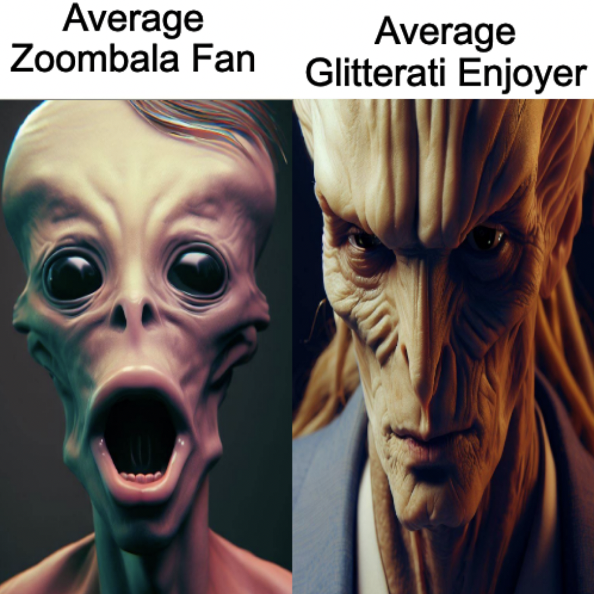

Welcome to The Daily Isotus
×


Zoombala Fans Found to Coexist Peacefully With Glitterati Enjoyers in Subterranean Caverns Beneath Bojangle Harvesting Planet
Disfad Bidge, PhD | March 18, 2023 | Earth
New algorithms not behind recent decline in Bojangle yield?

Hazzlebopian Intergalactic Council Votes to Ban All Use of the Letter "🝒"
ラ🜁മാ🜊מו טങ്ങאצΦυσ (Formerly 🝒🜁മാ🜊מו טങ്ങאצΦυσ) | Quentember 41st, 9764 | Hazzlebop
Goodbye, sy-yah! Hazzlebop makes a bold move in banning a letter from their language system...